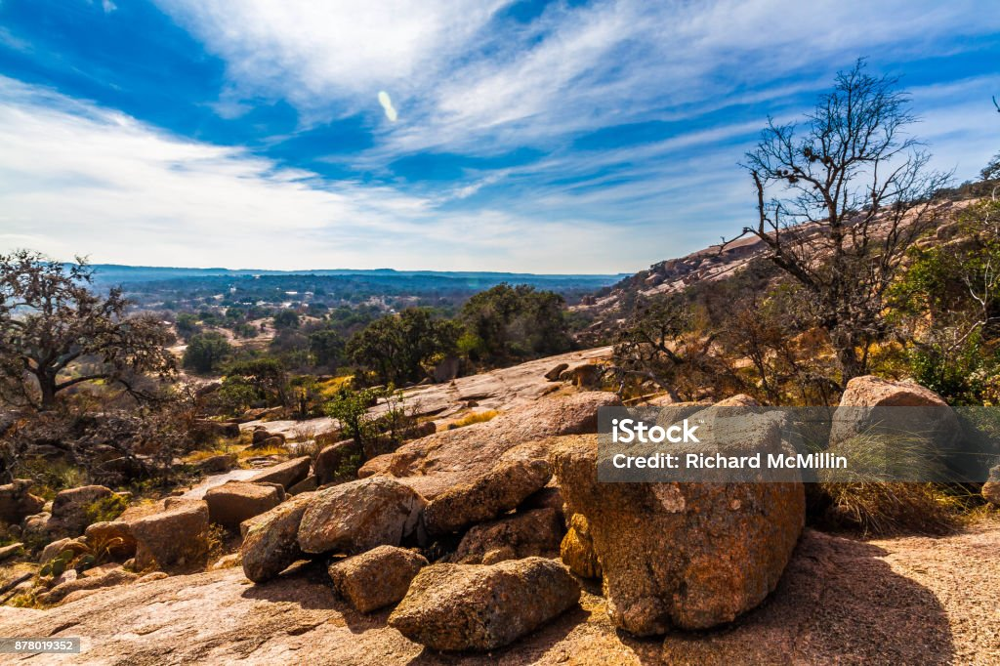

San Antonio
The home of the Alamo
"Show me your shoes!" — mysanantonio.com
"Show me your shoes!" — mysanantonio.com
Orale! Welcome to San Antonio the 2nd largest city in Texas and 7th in the US. San Antonio has a rich history with historic sites like the Alamo and San Jose Missions.These two staples in Texas History and battle for independance in the 19th century. San Antonio is home the the following profession sports teams.
San Antonio tourist attractions include the Riverwalk, The Tower of America's, Sea World, Six Flag's Fiesta Texas, and Morgan's Wonderland. Throughout the Alamo city you can find delicious southern and Mexican cuisine. San Antonio is the birthplace of Michelle Rodriguez, Jared Padalecki, Carol Burnett and many others. In May the city celebrates a week long celbration of Fiesta which attracts visitors from all over to attend the lavish parades.
